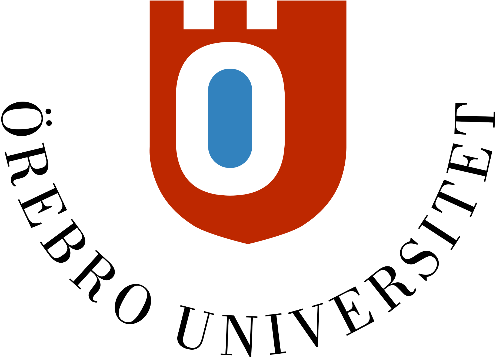
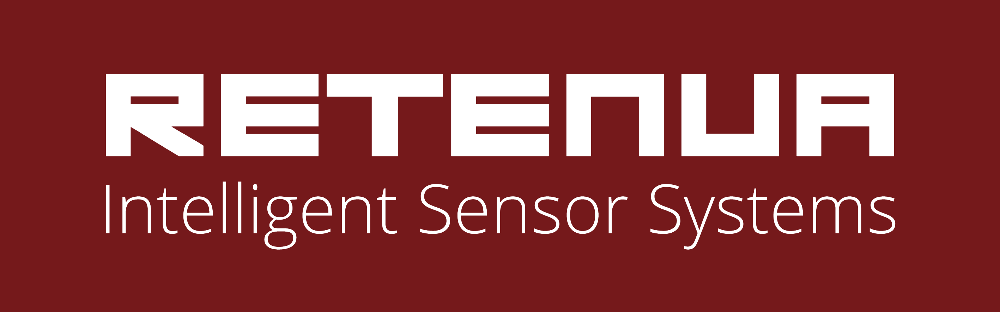
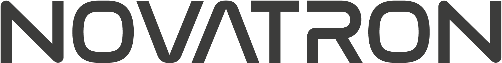

|
I am Paolo Forte, a postdoctoral researcher at the Robot Navigation & Perception Lab and the Cognitive Robotic Systems Lab at Örebro University, Sweden. I also work as a R&D engineer at Retenua. My research connects artificial intelligence (AI), in particular symbolic planning and knowledge representation, with robotics. On the planning side, I work on automatically generating planning models from knowledge representations, combining planning with language models, planning under uncertainty, and task and motion planning. On the robotics side, I work on autonomous navigation, optimization, multi-robot systems, cybersecurity for robotics, and human-robot interaction. I work with a range of robots, from mobile robots to heavy machines, in environments that are indoor and outdoor, structured and unstructured, static and dynamic. Github / Google Scholar / LinkedIn / Email |



|
From Website Source